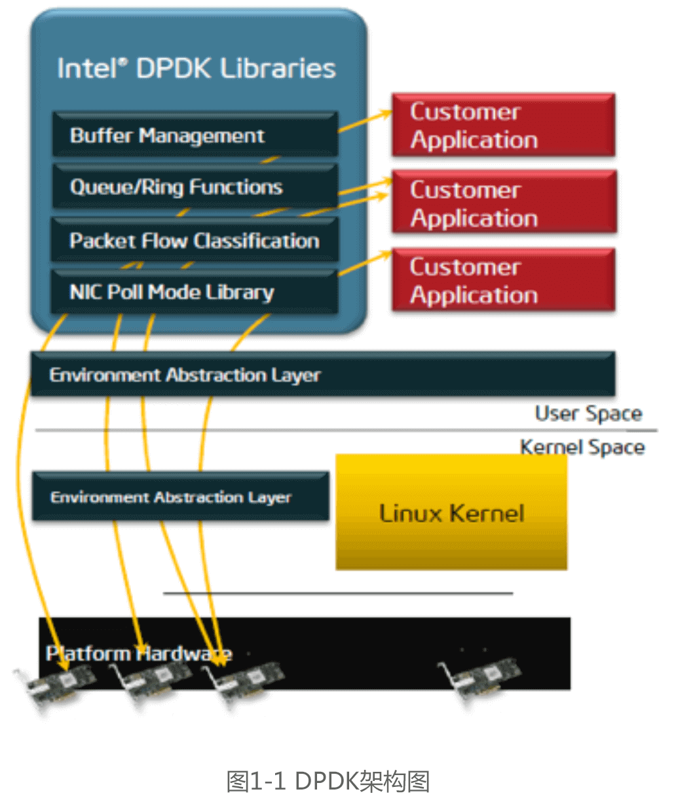
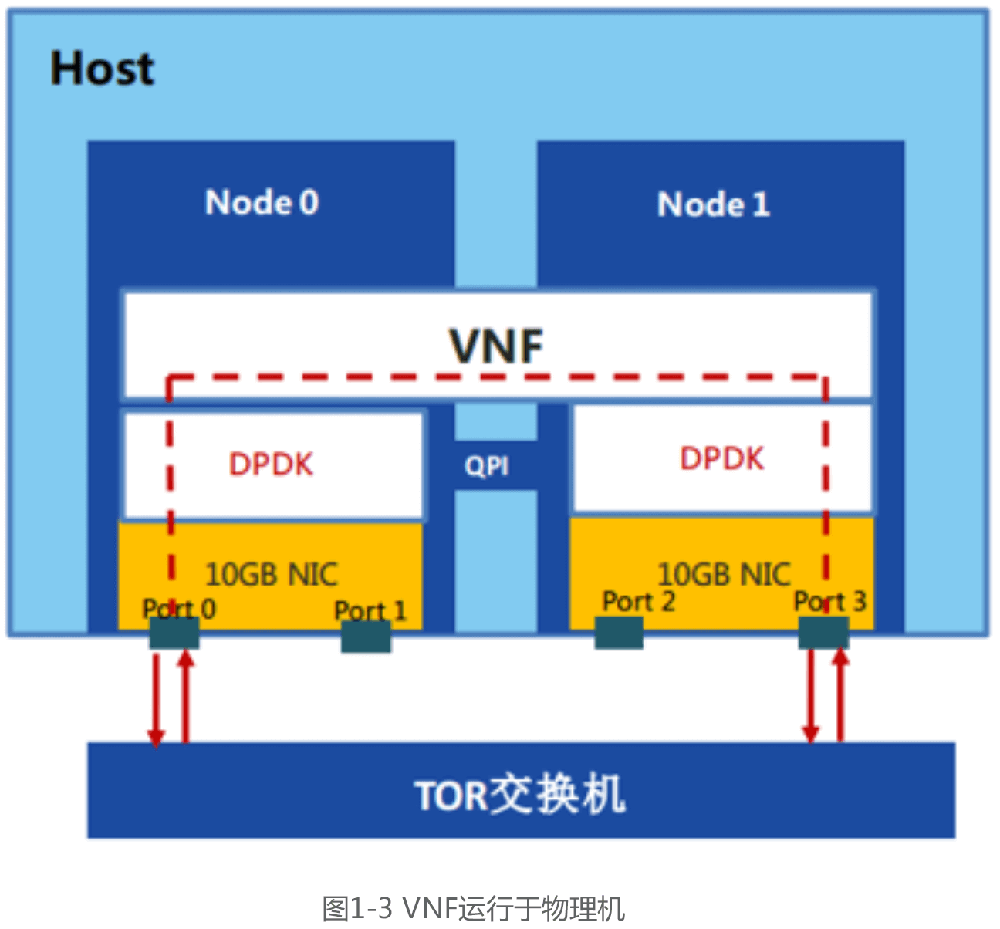
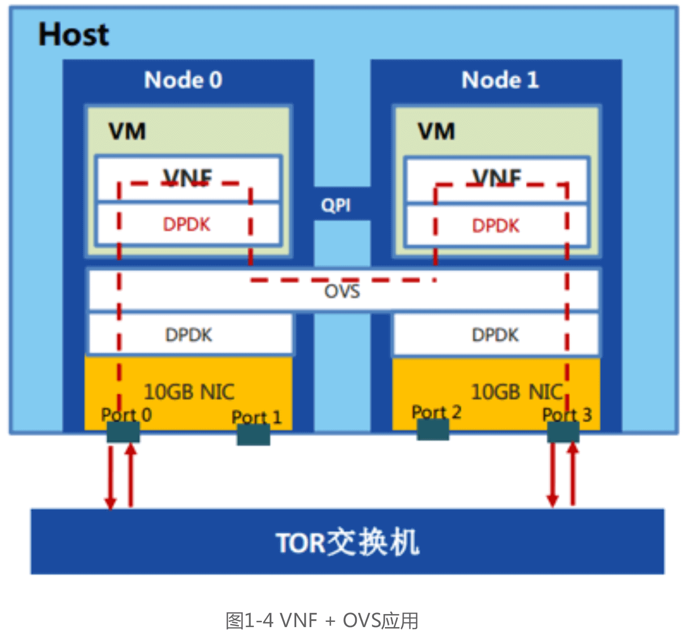
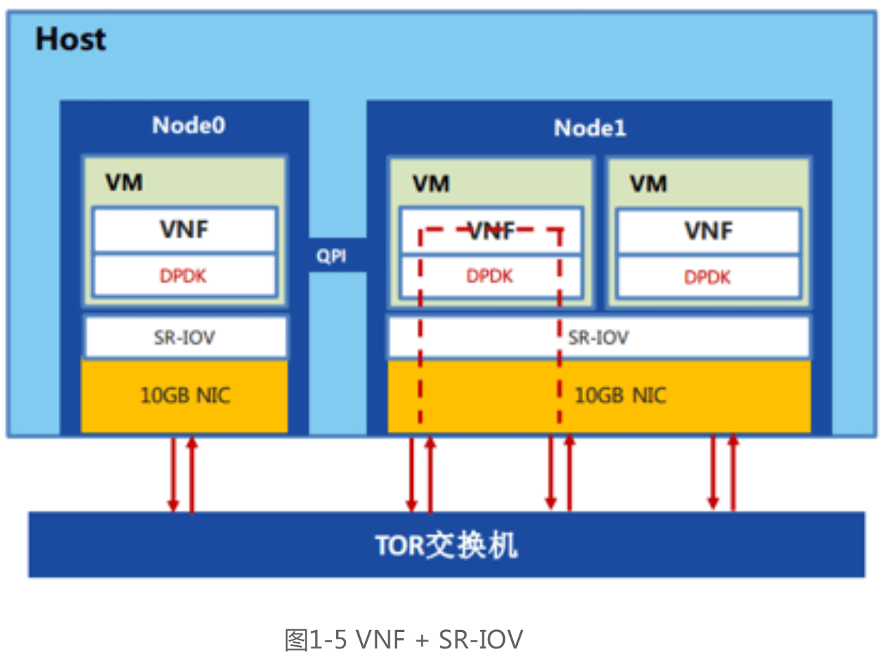

浅谈DPDK技术在NFV领域的应用
前言
近年来，DPDK这个名词在很多场合都有出现，相信大家对它也是耳熟能详。Intel DPDK全称Intel Data Plane Development Kit，是Intel提供的一个开源的数据平面开发工具集，为IA处理器架构下用户空间高效的数据包处理提供库函数和驱动的支持，它不同于Linux系统以通用性设计为目的，而是专注于网络应用中数据包的高性能处理，它最大的优点就是改进小封包吞吐量与数据包转发效率。它通过环境抽象层旁路内核协议栈、轮询模式的报文无中断收发、优化内存/缓冲区/队列管理、基于网卡多队列和流识别的负载均衡等多项技术，实现了在 x86 处理器架构下的高性能报文转发能力，用户可以在Linux 用户态空间开发各类高速转发应用，也适合与各类商业化的数据平面加速解决方案进行集成。DPDK除了应用在企业终端外, 也可以在软件定义网路(SDN)与网路功能虚拟化(NFV) 中扮演着重要的角色，今天我们要简单探讨的就是在NFV领域的应用。
一、概述
回顾ETSI NFV参考架构，NFV技术通过运行在通用x86架构硬件上的虚拟化网络功能，通过软硬件解耦及功能抽象，使网络功能不再依靠专用硬件，实现硬件资源灵活共享，快速部署和开发新的业务，为电信运营商和互联网服务商提供了一种灵活的业务部署手段和高效的组网方案，可以支持传统的固移网络和IDC中NAT、DPI、EPC、FW等各类业务功能的广域网灵活部署与网元弹性扩展。
不同于典型数据中心业务和企业网业务，电信广域网业务要求网元（如DPI、FW等）具有高吞吐、低时延、海量流表支持、用户级QoS控制的特点。大量实践表明，通用x86服务器作为NFV基础设施用于高转发业务时，面临着严重的转发性能瓶颈，需要有针对性地从硬件架构、系统I/O、操作系统、虚拟化层、组网与流量调度、VNF功能等多个层面进行性能优化，才能达到各类NFV网络业务的高性能、高效率转发要求。考虑到现实环境中的NFV解决方案一般由NFV基础设施和VNF两类系统服务商提供。因此，相应的NFV端到端性能优化，也应划分为底层的NFV基础设施性能与上层的VNF性能两类，以方便明确各自的性能瓶颈，避免不同层次的性能调优工作带来相互干扰。
在NFV基础设施性能优化技术方案中，DPDK软件加速方案已成为一种普遍采用的基本方法，它以用户数据I/O通道优化为基础，结合了Intel VT技术、操作系统、虚拟化层与vSwitch等多种优化方案，已经形成了完善的性能加速整体架构，并提供了用户态API供高速转发类应用访问。
二、DPDK架构与技术原理
由于采用软件转发和软件交换技术，单服务器内部的转发能力是 NFV 系统的主要性能瓶颈。 在各类高速转发的 NFV 应用中，数据报文从网卡中接收，再传送到虚拟化的用户态应用程序（VNF） 处理，整个过程要经历 CPU 中断处理、虚拟化 I/O 与地址映射转换、虚拟交换层、网络协议栈、内核上下文切换、内存拷贝等多个费时的 CPU 操作和 I/O 处理环节。业内通常采用消除海量中断、旁路内核协议栈、减少内存拷贝、CPU多核任务分担、IntelVT 等技术来综合提升服务器数据平面的报文处理性能，普通用户较难掌握。 业界迫切需要一种综合的性能优化方案，同时提供良好的用户开发和商业集成环境， DPDK 加速技术方案成为其中的典型代表。
DPDK架构
DPDK、网卡、用户应用程序、内核之间的关系。DPDK在网卡收到包后绕过内核直达用户空间。
Memory Manager（内存管理器）:负责内存对象池的分配。内存管理器使用大页面内存来创建内存池，同时也提供了数据对齐的支持来保障对内存通道的访问更加均匀。
Buffer Manager（缓存管理器）:Intel DPDK通过在内存池中预分配固定长度的缓存，显著的缩短了操作系统在分配和释放缓存所花的时间。
Queue Manager（队列管理器）:提供安全的无锁队列，从而使得不同的软件组件在处理数据包时可以避免一些不必要的等待。
Flow Classification（流分类）:提供了高效的基于Intel SSE扩展指令的hash函数，保障数据包的快速分类处理，从而提高网络吞吐量。
Poll Mode Drivers（轮询模式驱动）:针对千兆和万兆网卡的轮询模式驱动，不同于传统的异步中断处理机制，大大提高了数据包处理性能。
软件组成架构
DPDK的软件组成架构如图 1-2 所示，各个模块的概述介绍如下：

在图 1-2 中，最底部的内核态（Linux Kernel）DPDK有两个模块：KNI与IGB_UIO。其中，KNI提供给用户一个使用Linux内核态的协议栈，以及传统的Linux网络工具（如ethtool, ifconfig）。IGB_UIO（igb_uio.ko和kni.ko. IGB_UIO）则借助了UIO技术，在初始化过程中将网卡硬件寄存器映射到用户态。
如图 1-2，DPDK的上层用户态由很多库组成，主要包括核心部件库（Core Libraries）、平台相关模块(Platform)、网卡轮询模式驱动模块（PMD-Natives &Virtual）、QoS库、报文转发分类算法（Classify）等几大类，用户应用程序可以使用这些库进行二次开发，下面分别简要介绍。
核心部件库：该模块构成的运行环境是建立在 Linux 上，通过环境抽象层(EAL)的运行环境进行初始化，包括：HugePage内存分配、内存/缓冲区/队列分配与无锁操作、CPU亲和性绑定等；其次，EAL实现了对操作系统内核与底层网卡I/O操作的屏蔽（I/O旁路了内核及其协议栈），为DPDK应用程序提供了一组调用接口，通过UIO或VFIO技术将PCI设备地址映射到用户空间，方便了应用程序调用，避免了网络协议栈和内核切换造成的处理延迟。另外，核心部件还包括创建适合报文处理的内存池、缓冲区分配管理、内存拷贝、以及定时器、环形缓冲区管理等。
平台相关模块：其内部模块主要包括KNI、能耗管理以及IVSHMEM接口。其中，KNI模块主要通过kni.ko模块将数据报文从用户态传递给内核态协议栈处理，以便用户进程使用传统的socket接口对相关报文进行处理；能耗管理则提供了一些API，应用程序可以根据收包速率动态调整处理器频率或进入处理器的不同休眠状态；另外，IVSHMEM模块提供了虚拟机与虚拟机之间，或者虚拟机与主机之间的零拷贝共享内存机制，当DPDK程序运行时，IVSHMEM模块会调用核心部件库API，把几个HugePage映射为一个IVSHMEM设备池，并通过参数传递给QEMU，这样，就实现了虚拟机之间的零拷贝内存共享。
轮询模式驱动模块：PMD相关API实现了在轮询方式下进行网卡报文收发，避免了常规报文处理方法中因采用中断方式造成的响应延迟，极大提升了网卡收发性能。此外，该模块还同时支持物理和虚拟化两种网络接口，从仅仅支持Intel网卡，发展到支持Cisco、Broadcom、 Mellanox、 Chelsio等整个行业生态系统,以及基于 KVM、VMWARE、XEN等虚拟化网络接口的支持。
DPDK还定义了大量API来抽象数据平面的转发应用，如ACL、QoS、流分类和负载均等。并且，除以太网接口外，DPDK还在定义用于加解密的软硬件加速接（Extensions）。
总体而言，DPDK技术具有如下特征：
- 采用非常灵活的BSD License，保证了可合法用于商业产品。
- 支持RedHat、CentOS、Fedora、Ubuntu等大多数Linux系统，并且已开始进入主流 Linux发布版本。
- 数据面的开发库和优化的用户态网卡驱动：包括队列和缓存管理，数据流分类，轮询式网卡驱动等。以及简单的API接口，使用标准的工具链(gcc/icc, gdb, profiling tools)。
- DPDK支持Run to Completion和Pipeline两种报文处理模式，用户可以依据需求灵活选择，或者混合使用。Run to Completion是一种水平调度方式，利用网卡的多队列，将报文分发给多个CPU核处理，每个核均独立处理到达该队列的报文，资源分配相对固定，减少了报文在核间的传递开销，可以随着核的数目灵活扩展处理能力； Pipeline模式则通过共享环在核间传递数据报文或消息，将系统处理任务分解到不同的CPU核上处理， 通过任务分发来减少处理等待时延。
- DPDK的库函数和样例程序十分丰富，包括L2/L3转发、Hash、ACL、QoS、环形队列等大量示例供用户参考。
UIO技术
UIO指的是运行在用户空间的I/O技术，是实现用户空间下驱动程序的支撑机制。在用户空间用应用程序调用即可，而UIO则是将驱动的很少一部分运行在内核空间，而在用户空间实现驱动的绝大多数功能。使用UIO可以避免设备的驱动程序需要随着内核的更新而更新的问题。由于DPDK是应用层平台，所以与此紧密相连的网卡驱动程序（主要是intel自身的千兆igb与万兆ixgbe驱动程序）都通过uio机制运行在用户态下。Intel DPDK的igb_uio内核模块依赖于内核的UIO，需要以模块方式进行编译。
Hugepages技术
大内存页指的是为包处理的缓冲区缓冲区分配更大的大内存池，利用大内存页的主要好处是通过利用大内存页提高内存使用效率。处理器的内存管理包含物理内存和虚拟内存两个方面。 Linux 操作系统里面整个物理内存按帧 （Frames）来进行管理，虚拟内存按照页（Page）来进行管理。内存管理单元（MMU）完成从虚拟内存地址到物理内存地址的转换。内存管理单元进行地址转换需要的信息保存在一个叫页表（Page table）的数据结构里面， 页表查找是一种极其耗时的操作。为了减少页表的查找过程，Intel处理器实现了一块缓存来保存查找结果，这块缓存被称为TLB（Translation Lookaside Buffer），它保存了虚拟地址到物理地址的映射关系。 所有虚拟地址在转换为物理地址以前，处理器会首先在 TLB 中查找是否已经存在有效的映射关系，如果TLB中正好存放着所需的页表，则称为TLB命中（TLB Hit），如果没有发现有效的映射，也就是TLB失败(TLB Miss)，处理器再进行页表的查找。 页表的查找过程对性能影响极大， 因此需要尽量减少TLB Miss 的发生。
x86处理器硬件在缺省配置下，页的大小是4K， 但也可以支持更大的页表尺寸，例如2M或1G的页表。使用了大页表功能后，一个TLB表项可以指向更大的内存区域，这样可以大幅减少TLB Miss的发生。早期的Linux并没有利用x86硬件提供的大页表功能，仅在Linux内核2.6.33 以后的版本，应用软件才可以使用大页表功能，具体的介绍可以参见Linux的大页表文件系统（hugetlbfs）特性。
DPDK则利用大页技术，所有的内存都是从HugePage里分配，实现对内存池(Mempool)的管理，并预先分配好同样大小的m_buf，供每一个数据包使用。
轮询技术
传统网卡的报文接收/发送过程中，网卡硬件收到网络报文，或发送完网络报文后，需要发送中断到CPU，通知应用软件有网络报文需要处理。在x86处理器上，一次中断处理需要将处理器的状态寄存器保存到堆栈，并运行中断服务程序，最后再将保存的状态寄存器信息从堆栈中恢复。整个过程需要至少300个处理器时钟周期。对于高性能网络处理应用， 频繁的中断处理开销极大降低了网络应用程序的性能。
为了减少中断处理开销， DPDK 使用了轮询技术来处理网络报文。网卡收到报文后， 直接将报文保存到处理器Cache中（有DDIO（Direct Data I/O）技术的情况下）， 或者保存到内存中（没有 DDIO 技术的情况下），并设置报文到达的标志位。 应用软件则周期性地轮询报文到达的标志位，检测是否有新报文需要处理。 整个过程中完全没有中断处理过程， 因此应用程序的网络报文处理能力得以极大提升。
CPU亲和技术
业内主流操作系统都是基于分时调用方式来实现任务调度，多个进程或线程在多核处理器的某一个核上不断地交替执行。每次切换过程，都需要将处理器的状态寄存器保存在堆栈中，并恢复当前进程的状态信息，这对系统其实是一种处理开销。将一个线程固定一个核上行，可以消除切换带来的额外开销。另外将进程或者线程迁移到多核处理器的其它核上进行运行时， 处理器缓存中的数据也需要进行清除，导致处理器缓存的利用效果降低。
CPU的亲和性也就是cpu affinity机制，指的是进程要在指定的 CPU 上尽量长时间地运行而不被迁移到其他处理器, 通过处理器关联可以将虚拟处理器映射到一个或多个物理处理器上，也就是说把一个程序绑定到一个物理CPU上这样就保证了专用程序的性能。
DPDK 使用了 Linux pthread 库，将控制面线程以及各个数据面线程绑定到不同的cpu，然后相应的线程尽可能使用独立的资源进行相关的数据处理，线程之间互不干扰的完成工作，省却了来回反复调度的性能开销。
三、DPDK在NFV中的应用场景
场景一、VNF在物理机上应用
运营商现有网络大部分设备都是专用网络设备，物理设备与应用软件紧耦合，设备升级成本高、功能扩展困难。将这些专用的网络功能设备，以软件化的VNF形式直接运行在物理服务器上，可以实现网络设备形态的通用化，方便设备功能灵活扩展。
该方案将一部分原来由硬件实现的网络功能，以VNF软件的形式直接运行在x86服务器OS上，同时在物理服务器上加载DPDK组件。此时，DPDK接管了物理网卡的I/O驱动， VNF也不再使用传统Linux内核网络协议栈，而是通过调用DPDK的用户态API进行快速转发。同时，DPDK进程将使用少量的处理器核（如2个核）与内存以满足高速转发处理， VNF 可以直接使用剩余的全部硬件资源，适用于DPI和FW等资源利用率长期较高的网络业务。尽管该方案下整台服务器仅支持单一VNF应用，但因设备形态统一，软件功能部署灵活，仍具有较高应用价值。具体实现架构如图 1-3 所示
场景二、VNF + OVS应用
当多个VNF分别运行在一台服务器的多个VM中时，为满足VNF之间可能的流量交换或者共享物理网卡的需要，可以在Host OS上安装OVS类虚拟交换机，用于连接各个VNF（VM）和服务器的物理网卡端口。此时，这多个VNF一般是不同类型的VNF应用，VNF之间可能产 生交互流量或者业务链处理流量，而同类型多个VNF或者纯粹共享网卡的多个VNF，一般采 场景三的“VNF + SR-IOV”方案。
在“VNF + OVS”方案中，因主要的性能瓶颈存在于VNF的虚拟I/O通道和OVS交换机，DPDK需要分别安装在运行VNF的VM镜像内部和运行OVS的物理服务器OS上：前者用于优化VM内部的VNF数据平面转发性能，包括提供虚拟化网卡驱动、提供用户态转发API等，DPDK的各种配置方法与VNF运行在物理机中的机制类似，VNF并不能感知是运行在VM环境；后者用于优化OVS交换机性能，连接VM与各NUMA节点上的DPDK端口。该场景可以细分为两种：
A：VM到OVS仅使用单一连接。
B：VM到OVS采用一进一出的双向连接，如各类业务链中的VNF应用，见图 1-4。 该方案可以实现VNF的灵活扩容/缩容，以及在资源池中按需迁移，方案中的第三方VNF厂商可以屏蔽物理设备差异，提供各自的高性能业务产品。同时，使用经过DPDK优化后的OVS 交换机，可以灵活实现VNF间流量的灵活转发与互联互通，节省硬件交换机。
场景三、VNF + SR-IOV
当多个VNF运行在VM中时，各VM的虚拟网卡可以直接连至HOST上支持SR-IOV功能的物理网卡（VF）进行数据收发，如同独占物理网卡一样。该方案适用于VNF间无需流量交互的场景，或者是基于硬件交换机进行VNF互连和流量控制的场景。由于旁路了HOST的虚拟化层实现直接转发，可以达到近似物理转发的性能，被业界普遍用于消除Hypervisor带来的数据转发性能影响。
尽管“VNF+SR-IOV”方案消除了从物理网卡到VM虚拟网卡的性能瓶颈，但VM内部仍然需要通过加载DPDK以进一步优化各VNF（VM内部）的转发性能。此时，DPDK可以采用与前两种场景中类似的方法进行加载，同时占用VM内部一定CPU核和内存资源。
四、总结
英特尔 DPDK 可在广泛的使用案例中发挥作用，包括面向电信、能源和信息技术等不同行业的 NFV、下一代防火墙和大数据。 它可随时为您优化使用小型（64 字节）联网数据包的高性能应用。 它可提供简单的软件编程模型，该模型可从英特尔凌动处理器扩展至最新英特尔至强处理器，从而提供灵活的系统配置满足所有客户对性能和可扩展 I/O 的需求。英特尔在 2010 年启动了对 DPDK 技术的开源化进程，于当年9月通过BSD开源许可协议正式发布源代码软件包，并于2014年4月在www.dpdk.org上正式成立了独立的开源社区平台，为开发者提供支持。开源社区的参与者们大幅推进了DPDK的技术创新和快速演进，而今它已发展成为SDN和NFV的一项关键技术。